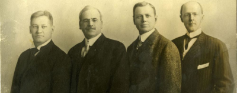

DADOS SOBRE ROTARY INTERNATIONAL
Quem Somos?
O Rotary é uma rede global de líderes comunitários, amigos e vizinhos que veem um mundo onde as pessoas se unem e entram em ação para causar mudanças duradouras em si mesmas, nas suas comunidades e no mundo todo.
O Fundador
O Rotary começou com a visão de um homem: Paul Harris. O advogado formou o Rotary Club de Chicago no dia 23 de fevereiro de 1905 para que profissionais de diferentes setores pudessem trocar ideias e fazer amizades duradouras.
No dia 23 de fevereiro de 1905, Paul P. Harris, Gustavus Loehr, Silvester Schiele e Hiram E. Shorey se reuniram no escritório de Loehr para a ocasião que ficaria conhecida como a primeira reunião de Rotary Club.